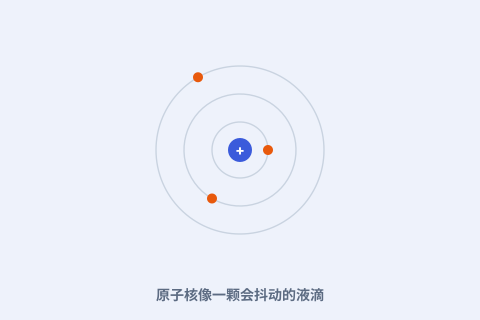

一、研究所的建立
1921 年玻尔在哥本哈根建立理论物理研究所，海森堡、泡利、狄拉克等青年才俊云集，量子力学的核心思想在此成形。

二、与爱因斯坦的论战
从 1927 年起，玻尔与爱因斯坦反复辩论量子力学的完备性。“上帝不掷骰子”对“我们观测到的就是全部”——这场对话定义了现代物理的边界。
三、液滴模型
玻尔把原子核比作会抖动的液滴：被中子撞击时可能“晃裂”成两半。这一图像直接帮助理解了核裂变。
四、裂变的双刃剑
1939 年前后，裂变机制被阐明。它既是和平利用核能的基础，也通向了原子弹——玻尔晚年为此忧心并呼吁国际合作。